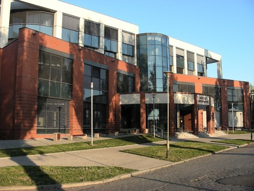
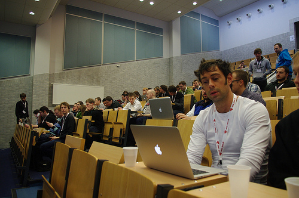

Venue


Instytut Informatyki, Uniwersytet Wrocławski
Days packed with sessions take place in Institute of Computer Science. If you were on wroc_love.rb last year you already know the place. This building is situated upon Odra river in the nearby of Most Grunwaldzki.
How to get there?
By tram (lines 0, 4, 33+) or by bus (lines 145, 146, 149). The stop is named “Most Grunwaldzki”. You can use jakdojade.pl service to find the best way from your starting point.
If you’re located in the city centre, you can also go by foot crossing Słowacki Park with Panorama Racławicka. Here’s the route from Market Square.
Make sure to check out street view shots: front and back entrance.
Source: Flickr / jandudulski